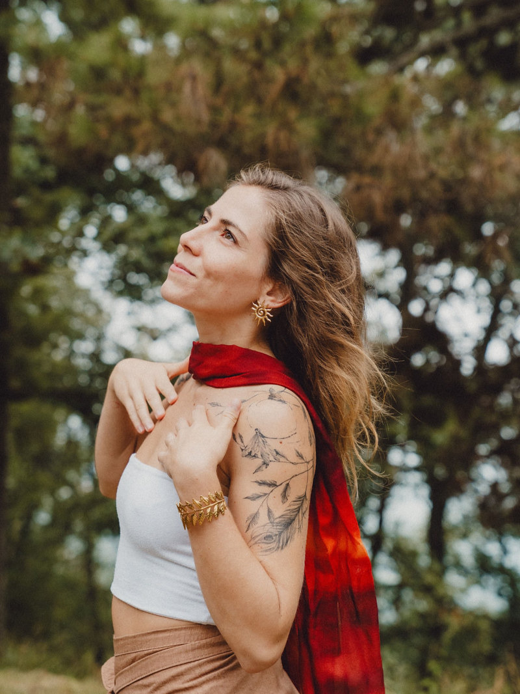
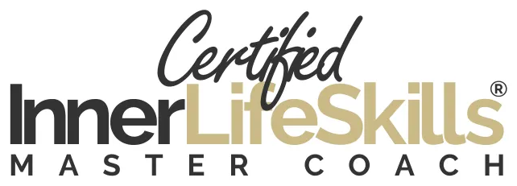
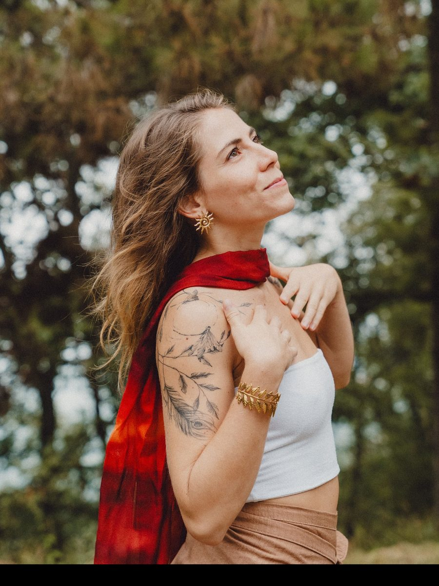
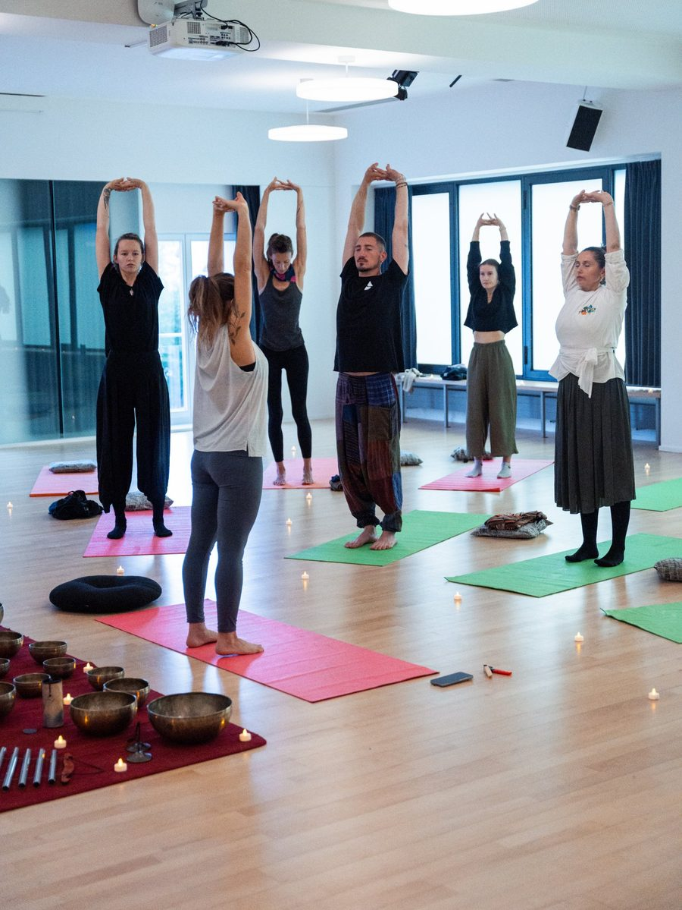
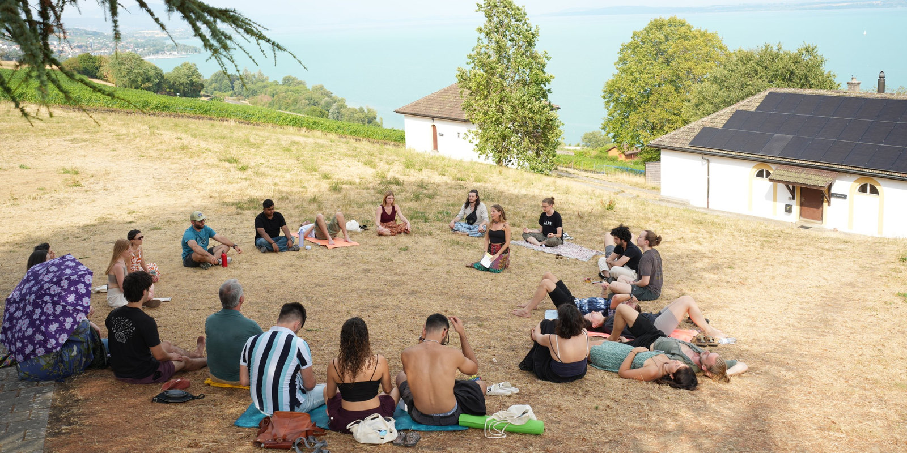

Somatic coach and yoga teacher in LausanneCoach somatique et professeure de yoga à LausanneCoach somatica e insegnante di yoga a Losanna
Your body has been trying to tell you something.Votre corps essaie de vous dire quelque chose.Il tuo corpo sta cercando di dirti qualcosa.
I help people who feel stuck, stressed or anxious to slow down and listen to their body again.
J'accompagne les personnes qui se sentent bloquées, stressées ou anxieuses à ralentir et à écouter à nouveau leur corps.
Accompagno le persone che si sentono bloccate, stressate o ansiose a rallentare e ad ascoltare di nuovo il proprio corpo.

Who I amQui je suisChi sono
Hi, I'm Andrea. For many years I followed the path my rational mind had drawn for me. I studied economics because it would "open many doors", then data science because everyone said it was the future. I ended up as a data analyst in a big corporation, spending my days improving strategies to sell more detergent.
I stayed almost four years. I call it the golden cage. The salary and the benefits were so good that it was hard to see how far that job was taking me from myself.
But a small voice inside me kept getting louder, asking: Who am I? Is this what I want to do for the world in this lifetime? What is my purpose? Can I be free? What is freedom?
That's when yoga came into my life. It brought me back into my body. I started to notice the games my mind was playing, and to feel something precious in me that couldn't grow in that environment. Slowly, a deep trust grew, and it helped me make the risky decision to quit my job and travel. A full jump into the dark, not knowing where it would lead.
Today I work with the body, helping people learn again how to feel. Often they come to me because they feel stuck, overwhelmed or anxious, as if they were running after life instead of living it. I've been there too.
If you recognise yourself in this, book an intro call. We'll just chat and see if it feels right.
With love,
Hello, moi c'est Andrea. Pendant de nombreuses années, j'ai suivi le chemin que mon mental rationnel avait tracé pour moi. J'ai étudié l'économie parce que cela allait « m'ouvrir beaucoup de portes », puis la data science parce que tout le monde disait que c'était l'avenir. Je me suis retrouvée data analyst dans une grande entreprise, à passer mes journées à améliorer des stratégies pour vendre plus de lessive.
J'y suis restée presque quatre ans. Je l'appelle la cage dorée. Le salaire et les avantages étaient si bons qu'il était difficile de voir à quel point ce travail m'éloignait de moi-même.
Mais une petite voix en moi devenait de plus en plus forte et me demandait : Qui suis-je ? Est-ce vraiment ce que je veux faire pour le monde dans cette vie ? Quel est mon but ? Est-ce que je peux être libre ? Qu'est-ce que la liberté ?
C'est à ce moment-là que le yoga est entré dans ma vie. Il m'a ramenée dans mon corps. J'ai commencé à remarquer les jeux de mon mental, et à sentir en moi quelque chose de précieux qui ne pouvait pas grandir dans cet environnement. Peu à peu, une confiance profonde est née, et elle m'a aidée à prendre la décision risquée de quitter mon travail et de voyager. Un saut dans le vide, sans savoir où il me mènerait.
Aujourd'hui, je travaille avec le corps et j'aide les personnes à réapprendre à ressentir. Souvent, elles viennent me voir parce qu'elles se sentent bloquées, débordées ou anxieuses, comme si elles couraient après la vie au lieu de la vivre. Je suis passée par là, moi aussi.
Si vous vous reconnaissez dans ces mots, réservez un appel découverte. On discutera simplement, pour voir si c'est juste pour vous.
Avec amour,
Ciao, sono Andrea. Per tanti anni ho seguito la strada che la mia mente razionale aveva tracciato per me. Ho studiato economia perché mi avrebbe "aperto tante porte", poi data science perché tutti dicevano che era il futuro. Sono finita a lavorare come data analyst in una grande multinazionale, passando le giornate a migliorare strategie per vendere più detersivo.
Ci sono rimasta quasi quattro anni. La chiamo la gabbia dorata. Lo stipendio e i benefit erano così buoni che era difficile vedere quanto quel lavoro mi stesse allontanando da me stessa.
Ma una piccola voce dentro di me si faceva sempre più forte e mi chiedeva: Chi sono? È questo che voglio fare per il mondo in questa vita? Qual è il mio scopo? Posso essere libera? Che cos'è la libertà?
È in quel periodo che lo yoga è entrato nella mia vita. Mi ha riportata nel mio corpo. Ho cominciato a notare i giochi che la mia mente mi faceva, e a sentire dentro di me qualcosa di prezioso che in quell'ambiente non poteva crescere. Piano piano è nata una fiducia profonda, che mi ha aiutata a prendere la decisione rischiosa di lasciare il lavoro e viaggiare. Un salto nel buio, senza sapere dove mi avrebbe portata.
Oggi lavoro con il corpo, aiutando le persone a imparare di nuovo a sentire. Spesso arrivano da me perché si sentono bloccate, sopraffatte o ansiose, come se stessero rincorrendo la vita invece di viverla. Ci sono passata anch'io.
Se ti riconosci in queste parole, prenota una call conoscitiva. Faremo semplicemente due chiacchiere per capire se è la strada giusta per te.
Con amore,
Andrea
TrainingsFormationsFormazioni
- InnerLifeSkills Master Coach (ICF-accredited school)Master Coach InnerLifeSkills (école accréditée ICF)Master Coach InnerLifeSkills (scuola accreditata ICF)
- Somatic EducatorÉducatrice somatiqueEducatrice somatica (Somatic Institute for Women)
- 200h Yoga Teacher, Hatha and AshtangaProfesseure de yoga 200h, Hatha et AshtangaInsegnante di yoga 200h, Hatha e Ashtanga (Yoga Alliance)

What I offerCe que je proposeCosa offro
1:1 somatic coachingCoaching somatique individuelCoaching somatico individuale
Regular sessions to work with stress, anxiety or feeling stuck, through the body. More about coaching
Des séances régulières pour travailler avec le stress, l'anxiété ou le sentiment d'être bloqué, à travers le corps. En savoir plus sur le coaching
Sessioni regolari per lavorare con lo stress, l'ansia o la sensazione di essere bloccati, attraverso il corpo. Scopri di più sul coaching
Somatic Flow yoga
Hatha-vinyasa where you really feel your muscles as you move. Open to all levels. More about the yoga
Du hatha-vinyasa où l'on sent vraiment ses muscles en mouvement. Ouvert à tous les niveaux. En savoir plus sur le yoga
Hatha-vinyasa in cui senti davvero i tuoi muscoli mentre ti muovi. Aperto a tutti i livelli. Scopri di più sullo yoga
Women's circles and work with womenCercles de femmes et accompagnement des femmesCerchi di donne e lavoro con le donne
A small circle where women can bring what they carry and be met without being fixed. In 1:1 work too, I accompany women around feeling safe in their body, sensuality, the menstrual cycle, and the beliefs we inherited about how a woman's body should look and behave.
Un petit cercle où les femmes peuvent déposer ce qu'elles portent et être accueillies, sans qu'on cherche à les réparer. En individuel aussi, j'accompagne les femmes autour de la sécurité dans leur corps, de la sensualité, du cycle menstruel et des croyances héritées sur ce que le corps d'une femme devrait être.
Un piccolo cerchio in cui le donne possono portare ciò che hanno dentro ed essere accolte, senza che nessuno cerchi di aggiustarle. Anche nel lavoro individuale accompagno le donne a sentirsi al sicuro nel proprio corpo, nella sensualità, nel ciclo mestruale e rispetto alle convinzioni ereditate su come il corpo di una donna dovrebbe essere.
WorkshopsAteliersWorkshop
Nervous system regulation, embodiment and contact dance, in small groups.
Régulation du système nerveux, embodiment et danse contact, en petits groupes.
Regolazione del sistema nervoso, embodiment e contact dance, in piccoli gruppi.
Somatic coachingCoaching somatiqueCoaching somatico
A space without judgement, where all your parts can feel safe to show up. We start by slowing down, connecting to the breath and to the sensations in the body. We learn how to read and regulate your nervous system, to regain control over your life. We learn the language of the body. Through breath, movement, sound and touch, we give a voice to the sensations and to the parts of you that usually get no space. When we make room for them, we can often understand the need they carry underneath, and unlock what has been holding you back. Little by little, you will learn to listen to the messages of your body and build a new relationship with yourself.
Un espace sans jugement, où toutes vos parts peuvent se sentir en sécurité pour se montrer. On commence par ralentir, en se connectant au souffle et aux sensations du corps. On apprend à lire et à réguler votre système nerveux, pour reprendre la main sur votre vie. On apprend le langage du corps. Avec la respiration, le mouvement, le son et le toucher, on donne une voix aux sensations et aux parties de vous auxquelles on ne laisse pas de place d'habitude. Quand on leur accorde de l'espace, on arrive souvent à comprendre le besoin qu'elles portent au fond, et à débloquer ce qui vous retenait. Petit à petit, vous apprendrez à écouter les messages de votre corps et à construire une nouvelle relation avec vous-même.
Uno spazio senza giudizio, dove tutte le tue parti possono sentirsi al sicuro di mostrarsi. Iniziamo rallentando, connettendoci al respiro e alle sensazioni del corpo. Impariamo a leggere e a regolare il tuo sistema nervoso, per riprendere in mano la tua vita. Impariamo il linguaggio del corpo. Con il respiro, il movimento, il suono e il tocco, diamo voce alle sensazioni e alle parti di te che di solito non trovano spazio. Quando facciamo loro spazio, spesso riusciamo a capire il bisogno che portano in profondità, e a sbloccare ciò che ti stava trattenendo. Poco a poco imparerai ad ascoltare i messaggi del tuo corpo e a costruire una nuova relazione con te.
Curious how your nervous system works? I wrote a short free guide on stress, anxiety and how the body finds its way back to calm.
Envie de comprendre comment fonctionne votre système nerveux ? J'ai écrit un petit guide gratuit sur le stress, l'anxiété et la façon dont le corps retrouve le calme.
Vuoi capire come funziona il tuo sistema nervoso? Ho scritto una breve guida gratuita sullo stress, sull'ansia e su come il corpo ritrova la calma.
Read the guideLire le guideLeggi la guida1:1 sessions and packages, in person in Lausanne or online, in English, French or Italian.Séances individuelles et forfaits, en présentiel à Lausanne ou en ligne, en français, anglais ou italien.Sessioni individuali e pacchetti, in presenza a Losanna o online, in italiano, francese o inglese.

Yoga

Yoga class at the ALPS Foundation conference, 2026Cours de yoga à la conférence de la Fondation ALPS, 2026Lezione di yoga alla conferenza della Fondazione ALPS, 2026
I teach Somatic Flow, hatha-vinyasa sequences taught with somatic awareness: moving with the breath, pausing to feel, and practising from sensation rather than performance. My somatic and coaching background brings nervous-system awareness and a warm, safe space to every class, for beginners and experienced practitioners alike.
J'enseigne le Somatic Flow, des séquences de hatha-vinyasa guidées avec une conscience somatique : bouger avec le souffle, faire des pauses pour ressentir, et pratiquer à partir des sensations plutôt que de la performance. Mon parcours somatique et de coach apporte à chaque cours une attention au système nerveux et un espace chaleureux et sécurisant, pour les débutants comme pour les pratiquants confirmés.
Insegno Somatic Flow, sequenze di hatha-vinyasa guidate con consapevolezza somatica: muoversi con il respiro, fermarsi per sentire, e praticare a partire dalle sensazioni invece che dalla performance. Il mio percorso somatico e di coaching porta in ogni lezione attenzione al sistema nervoso e uno spazio caldo e sicuro, sia per chi inizia sia per chi pratica da tempo.
In my classes we cultivate a body awareness you can take into any sport, and into everyday life. Open to all levels.
Dans mes cours, on cultive une conscience du corps que vous pouvez emporter dans tout sport, et dans la vie de tous les jours. Ouvert à tous les niveaux.
Nelle mie lezioni coltiviamo una consapevolezza del corpo che puoi portare in ogni sport e nella vita di tutti i giorni. Aperto a tutti i livelli.
Group classes, workshops and private sessions in Lausanne. Write to me for upcoming dates.
Cours collectifs, ateliers et séances privées à Lausanne. Écrivez-moi pour les prochaines dates.
Lezioni di gruppo, workshop e sessioni private a Losanna. Scrivimi per le prossime date.
200h Yoga Alliance certified (Hatha and Ashtanga), trained in Nepal and India.Certifiée 200h Yoga Alliance (Hatha et Ashtanga), formée au Népal et en Inde.Certificata 200h Yoga Alliance (Hatha e Ashtanga), formata in Nepal e in India.
In their wordsAvec leurs motsCon le loro parole
"I have tried yoga many times, but this is the first time it truly reached me. The gentleness of your guidance and your invitations let me relax into not caring about what it looks like, just feeling what was happening inside me. Please keep teaching because you have a gift."
« J'ai essayé le yoga plusieurs fois, mais c'est la première fois que cela m'a vraiment touchée. La douceur avec laquelle vous avez guidé la séance et vos invitations m'ont permis de me détendre, sans me soucier de quoi j'avais l'air, juste en sentant ce qui se passait en moi. Continuez à enseigner, car vous avez un don. »
«Ho provato lo yoga tante volte, ma è la prima volta che mi è arrivato davvero. La dolcezza con cui hai guidato la lezione e i tuoi inviti mi hanno permesso di rilassarmi, senza preoccuparmi di come apparivo, sentendo solo quello che succedeva dentro di me. Continua a insegnare, perché hai un dono.»
"I didn't really know what to expect and was a little nervous, but Andrea created a safe and welcoming space for us. The difference on my state of mind and body before and after the workshop was simply astonishing. I had been highly anxious for several days, but after the workshop I found myself in a really strong state of bliss, self-love, acceptance and connection. This state was quite unusual to me, and it lasted long to the following day."
« Je ne savais pas vraiment à quoi m'attendre et j'étais un peu nerveuse, mais Andrea a créé pour nous un espace sûr et accueillant. La différence dans mon état d'esprit et dans mon corps avant et après l'atelier était tout simplement stupéfiante. J'étais très anxieuse depuis plusieurs jours, mais après l'atelier je me suis retrouvée dans un état de joie profonde, d'amour de soi, d'acceptation et de connexion. C'était un état assez inhabituel pour moi, et il a duré jusqu'au lendemain. »
«Non sapevo bene cosa aspettarmi ed ero un po' nervosa, ma Andrea ha creato per noi uno spazio sicuro e accogliente. La differenza nel mio stato mentale e fisico prima e dopo il workshop è stata semplicemente sorprendente. Ero molto ansiosa da diversi giorni, ma dopo il workshop mi sono ritrovata in uno stato fortissimo di gioia, amore per me stessa, accettazione e connessione. Era uno stato piuttosto insolito per me, ed è durato fino al giorno dopo.»
"Andrea and Federico guided the contact dance with kindness, gentleness, and care. It made me realize how much I had been missing that feeling of connection."
« Andrea et Federico ont guidé la danse contact avec gentillesse, douceur et attention. Cela m'a fait réaliser à quel point ce sentiment de connexion me manquait. »
«Andrea e Federico hanno guidato la contact dance con gentilezza, dolcezza e cura. Mi ha fatto capire quanto mi mancasse quella sensazione di connessione.»
"This journey made me explore parts of myself I didn't know existed. I learned to know the sensations of my body through something so simple and yet so fundamental: the breath. Never a judgement, only understanding and extraordinary help."
« Ce parcours m'a fait explorer des parts de moi dont je ne connaissais pas l'existence. J'ai appris à connaître les sensations de mon corps à travers quelque chose de si simple et pourtant si fondamental : le souffle. Jamais un jugement, seulement de la compréhension et une aide extraordinaire. »
«Questo percorso mi ha fatto esplorare e conoscere parti di me che non sapevo esistessero. Ho imparato a conoscere le sensazioni del mio corpo attraverso una pratica così banale ma fondamentale allo stesso tempo, il respiro. Mai un giudizio, solo comprensione e un aiuto straordinario.»

Let's talkOn en parle ?Parliamone
The first call is free and without commitment. We'll see together if this work is right for you.Le premier appel est gratuit et sans engagement. On verra ensemble si ce travail est fait pour vous.La prima call è gratuita e senza impegno. Vedremo insieme se questo lavoro fa per te.